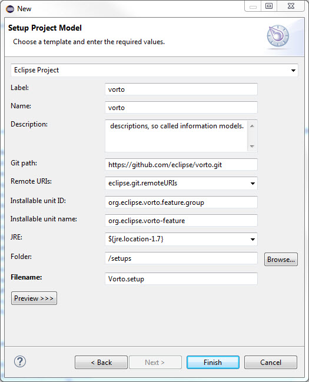

This blog tells how to use oomph to automate the annoying eclipse environment setup for Eclipse Vorto project. Although the depicted code is for Vorto project, the concept and procedure work for all Eclipse based project, it could be easily customized to help your own project.
## Why need automation? ##
Eclipse is probably the most popular free IDE platform in the world, there are a lot of open-source projects using Eclipse as their development environment. Thanks to its notable extensible plug-in design, developers are encouraged to integrate many useful third-party tools and even their own features to extend the standard Eclipse framework to meet the project requirements. However, on the other side, more and more plug-ins and thier version dependencies make Eclipse seems vunarable and causes a lot of headache for developers to setup a proper development environment. Moreover, it could be the very first but probably most effective roadblock for potential interesed developers to join an open-source project. Say Vorto :)
Oomph is an Eclipse plug-in designed to automate the installation and update of Eclipse development environment, recently it is adopted by Eclipse fundation and becomes the official Eclipse installer. Oomph project website provides more details. Basically, it is kind of script engine to manage Eclipse development environment installation, including Eclipse framework installation, third-party plug-ins installation, github clone, project import, project build, etc. So that users just need to set a few parameters, simple as the installation folder and should be given a complete workable environment after the installation process done.
As what I mentioned, Oomph is a script engine, so we need to write a script, called setup file in context to tell (define) Oomph how to setup the needed environment.
The setup for Vorto project is a little bit challenging, because Vorto uses DSL(Domain specific language), which requires dynamically generate java source code during installation process.
First, download Oomph (Eclipse installer) from Eclipse website (https://wiki.eclipse.org/Eclipse_Installer) and install it following the official instruction; Then we could use Oomph setup project model wizard to generate a basic tempelate for Vorto project.

The XML format setup file will be generated under (Oomph git path)/setups folder.
Then we need to add required plug-ins for P2Task,
<setupTask
xsi:type="setup.p2:P2Task"
id="p2.install">
<requirement
name="org.eclipse.wst.xml_ui.feature.feature.group"/>
<requirement
name="org.eclipse.m2e.feature.feature.group"/>
<requirement
name="org.eclipse.m2e.logback.feature.feature.group"/>
<requirement
name="org.sonatype.m2e.buildhelper.feature.feature.group"/>
<requirement
name="org.sonatype.tycho.m2e.feature.feature.group"/>
<requirement
name="org.eclipse.xtext.sdk.feature.group"
versionRange="[2.8.0,2.9.0)"/>
<requirement
name="org.eclipse.mylyn.java_feature.feature.group"/>
<requirement
name="org.eclipse.mylyn.git.feature.group"/>
<requirement
name="org.eclipse.pde.feature.group"/>
<requirement
name="org.eclipse.wst.jsdt.feature.feature.group"/>
<requirement
name="org.eclipse.wst.web_ui.feature.feature.group"/>
<repository
url="http://repo1.maven.org/maven2/.m2e/connectors/m2eclipse-buildhelper/0.15.0/N/0.15.0.201207090124/"/>
<repository
url="http://repo1.maven.org/maven2/.m2e/connectors/m2eclipse-tycho/0.8.0/N/0.8.0.201409231215/"/>
<repository
url="http://download.itemis.com/updates/"/>
<repository
url="http://download.itemis.de/updates/"/>
<repository
url="http://download.itemis.de/updates/releases"/>
<repository
url="http://download.eclipse.org/egit/updates"/>
<repository
url="http://download.eclipse.org/modeling/tmf/xtext/updates/releases/2.9.0/"/>
<repository
url="http://download.eclipse.org/modeling/emft/mwe/updates/releases/2.8.2/"/>
</setupTask>
Then we need to confirm the git clone configuration,
<setupTask
xsi:type="git:GitCloneTask"
id="git.clone.vorto"
remoteURI="https://github.com/eclipse/vorto.git"
checkoutBranch="development">
<annotation
source="http://www.eclipse.org/oomph/setup/InducedChoices">
<detail
key="label">
<value>Eclipse Vorto Git Repository</value>
</detail>
</annotation>
<description>Eclipse Vorto</description>
</setupTask>
Then, import the source code using maven,
<setupTask
xsi:type="maven:MavenImportTask"
id="import.maven.vorto">
<sourceLocator
rootFolder="${git.clone.vorto.location}"
locateNestedProjects="true"/>
</setupTask>
Then, setup target platform, here we are using the existing VortoTargetPlatform setup file;
<setupTask
xsi:type="pde:TargetPlatformTask"
id="vorto.target"
name="VortoTargetPlatform">
<description>Manually maintained target platform</description>
</setupTask>
Finally, generate java source code using MWE2 workflows, they should follow the exact sequence, and build the whole project after code generation;
<setupTask
xsi:type="setup:CompoundTask"
name="Mwe2 Generation">
<setupTask
xsi:type="launching:LaunchTask"
id="launch.generate.datatype"
launcher="1_Generate_Datatype"/>
<setupTask
xsi:type="launching:LaunchTask"
id="launch.generate.functionblock"
launcher="2_Generate_Functionblock"/>
<setupTask
xsi:type="launching:LaunchTask"
id="launch.generate.infomodel"
launcher="3_Generate_Infomodel"/>
<setupTask
xsi:type="launching:LaunchTask"
id="launch.generate.mapping"
launcher="4_Generate_Mapping"/>
<setupTask
xsi:type="projects:ProjectsBuildTask"
id="build_after_code_generation"
refresh="true"/>
</setupTask>
OK. Done! The complete setup file (Vorto.setup) could be downloaded here.
You could drag and drop into Eclipse Installer runtime to try it out. Enjoy!